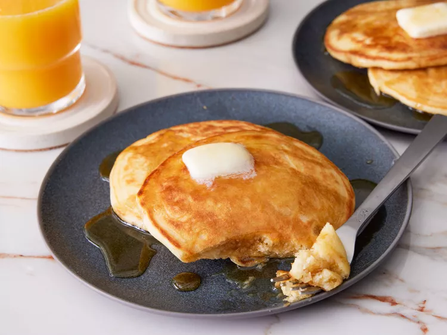

Homemade Pancakes

Just look at that tower of pancakes!
Who doesn't love sweet and fluffy pancakes in the morning? In this recipe, I'm going to show you how to make them!
Ingredients
- 1 ½ cups all-purpose flour
- 3 ½ teaspoons baking powder
- 1 tablespoon white sugar
- 1 teaspoon salt
- 1 ¼ cups milk
- 3 tablespoons butter, melted
- 1 egg
- cooking spray
- Sift together flour, baking powder, sugar, and salt in a large bowl. Whisk in milk, melted butter, and egg until combined
- Let batter rest for 5 minutes
- Preheat a large skillet over medium-high heat and spray with cooking spray
- Pour batter into the hot skillet, about 1/4 cup batter for each pancake
- Cook until bubbles appear on the sides and center of each pancake, 2 to 3 minutes
- Flip and cook until the bottom is golden, 1 to 2 minutes
- Serve with butter and maple syrup and enjoy!